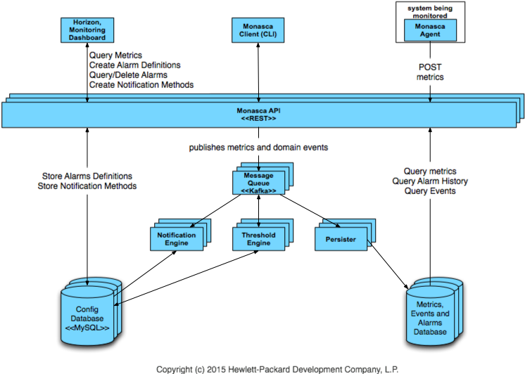

The HPE Helion OpenStack Monitoring service leverages Monasca, which is a multi-tenant, scalable, fault-tolerant OpenStack monitoring service.
This document describes the Monasca service and contains the following sections:
The Monasca service is automatically installed as part of the HPE Helion OpenStack installation.
No specific configuration is required to use Monasca. However, you can configure the database for storing metrics as detailed in the Monitoring Configuration document.
In the HPE Helion OpenStack 2.0 release, the OpenStack monitoring service, Monasca, is included as the HPE Helion OpenStack monitoring solution with the following exceptions:

Monasca-Agent
For a full list of packaged plugins that are included HPE Helion OpenStack, see Monasca Plugins
You can further customize the monasca-agent to suit your needs, see Customizing the Agent
Access to Monasca is available through a number of different interfaces.
Command-Line Interface
For users who prefer using the command line, there is the python-monascaclient.
For details on the CLI, including installation instructions, see Python-Monasca Client
Monasca API
If low-level access is desired, there is the Monasca REST API.
Full details of the Monasca API can be found on GitHub
Operations Console (OpsConsole) GUI
The Operations Console (Ops Console) for HPE Helion OpenStack 2.0 is designed for HPE Helion OpenStack Administrators to have a web-based UI they can use to view data about their cloud infrastructure. The Ops Console is a web-based GUI that offers the user access to data such as monitoring alarms data by service, performance data, compute nodes and instances lists, and a drilldown to Kibana for a deep look into logs. The Business Logic Layer is a middleware component that serves as a single point of contact for the UI to communicate with OpenStack services such as Monasca, Nova, and others.
If your administrator set a hostname value for external_name in your network_groups.yml file during the configuration process for your cloud then the Operations Console will be accessed over port 9095 on that hostname.
grep vip-HZN-WEB /etc/hosts
http://VIP:9095
The default username for the Administrator user is admin. In order to find the randomized password that is created for this user you will need to look into the ~/service.osrc file on the deployer/lifecycle-manager node. You can do that with this command:
cat ~/service.osrc
Helion OpenStack comes with some predefined monitoring alarms for the services installed.
Full details of all service alarms can be found here: Service Alarm Definitions.
When alarms are triggered it is helpful to review the service logs. Details on how to use the logging UI built into the Operations Console can be found here: Logging Interface
For details on OpenStack Monasca, see Monasca.io